7 月 1 日：ExPLoRe 等视觉表征论文归档
本页按日期归档近期论文，保留优先级、主题、来源与方法线索，方便回看同一批工作的研究脉络。
先读 ExPLoRe。把 token distillation、CLS alignment、pixel reconstruction 变成按 patch 自适应路由的 MIM 训练信号。 其余论文按 P1/P2 与主题顺序扫读，重点看方法图、消融设置和是否能迁移到通用视觉表征。
论文索引
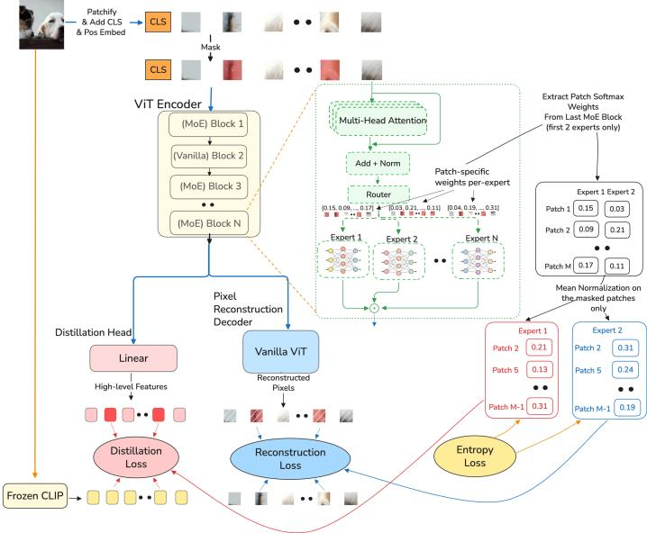
ExPLoRe: Expert Patch-Level Loss Routing for Multi-Objective Masked Image Modeling
高相关；详见方法、贡献和实验边界。
方法：把 token distillation、CLS alignment、pixel reconstruction 变成按 patch 自适应路由的 MIM 训练信号
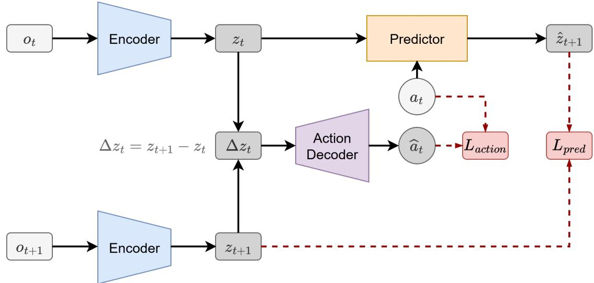
Delta-JEPA: Learning Action-Sensitive World Models via Latent Difference Decoding
高相关；详见方法、贡献和实验边界。
方法：针对 JEPA 式 world model 的 action-insensitive collapse，直接在 latent displacement 上加动作监督
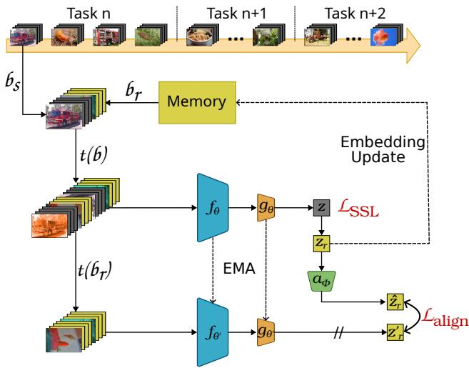
CLIMB: Centroid-Based Hierarchical Memory for Online Continual Self-Supervised Learning
高相关；详见方法、贡献和实验边界。
方法：在线 continual self-supervised learning 直接服务无标签图像流中的表征保持与漂移控制
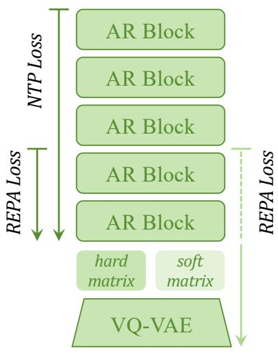
GEAR: Guided End-to-End AutoRegression for Image Synthesis
高相关；详见方法、贡献和实验边界。
方法：把 VQ tokenizer 与 AR generator 端到端联合训练，并用 representation alignment 让生成器反向塑造视觉 token
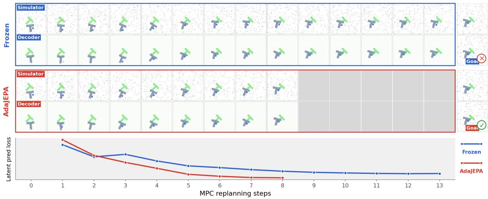
AdaJEPA: An Adaptive Latent World Model
中高相关；详见方法、贡献和实验边界。
方法：AdaJEPA 用闭环自监督 transition 做 test-time adaptation，补上 frozen latent world model 的分布偏移问题
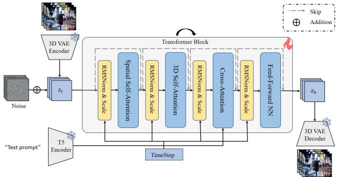
MemLearner: Learning to Query Context memory for Video World Models
中高相关；详见方法、贡献和实验边界。
方法：视频 world model 的长期一致性不只靠更长 context，MemLearner 学习如何查询 context memory
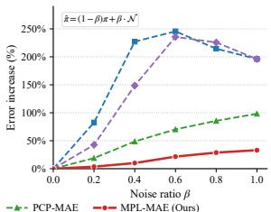
Mitigating Positional Leakage in 3D Masked Autoencoders for Robust Representation Learning
中高相关；详见方法、贡献和实验边界。
方法：3D MAE 的 positional leakage 诊断对所有 masked reconstruction 类 SSL 都有警示价值
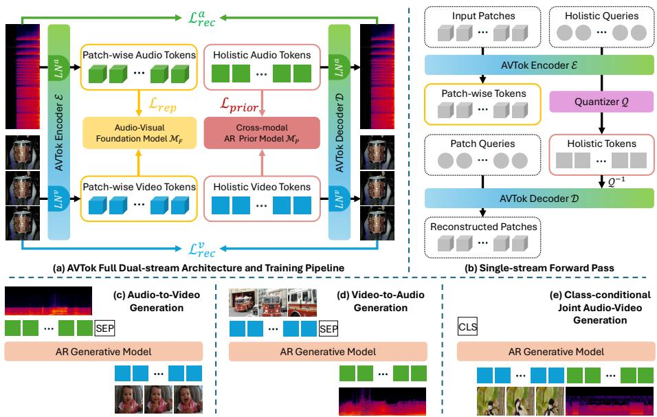
AVTok: 1D Unified Tokenization for Holistic Audio-Video Generation
中高相关；详见方法、贡献和实验边界。
方法：AVTok 把 audio/video 编到统一 1D latent codebook，和视觉 token 化、多模态预训练接口高度相关
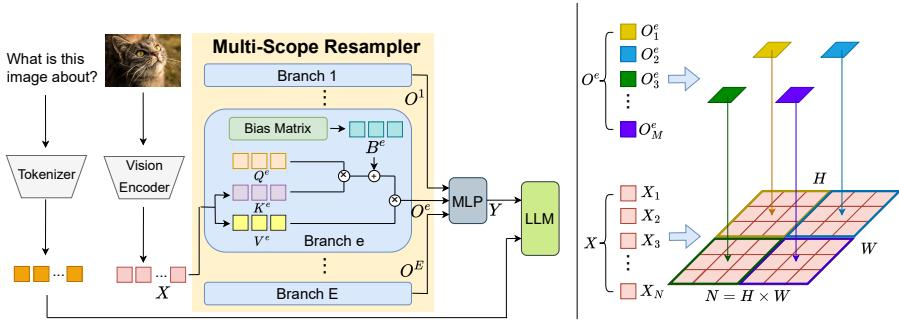
MS-Resampler: Multi-Scope Visual Resampling for Efficient Multimodal LLMs
中高相关；详见方法、贡献和实验边界。
方法：MS-Resampler 直接处理 dense visual features 到短 visual token sequence 的信息保留问题
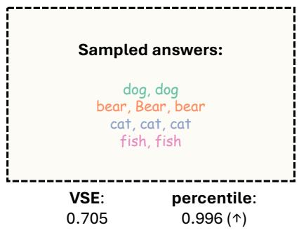
Visual Semantic Entropy: Do Vision Language Models Recognize Visual Ambiguity?
中高相关；详见方法、贡献和实验边界。
方法：用只扰动图像、不扰动文本的 Visual Semantic Entropy 测 VLM 是否识别视觉歧义
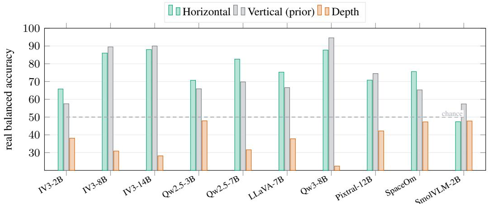
Decodable Is Not Grounded: A Vision-Ablation Arbiter for VLM Spatial Reasoning
中高相关；详见方法、贡献和实验边界。
方法：它用 blank-image arbiter 反驳“probe 能线性读出就代表视觉 grounded”的常见误判
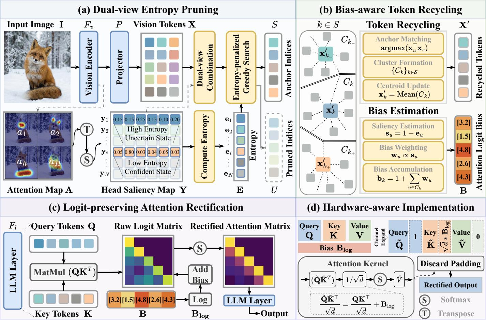
ERA: Entropy-Guided Visual Token Pruning with Rectified Attention for Efficient MLLMs
中相关；详见方法、贡献和实验边界。
方法：ERA 讨论 aggressive visual token pruning 后的 attention logit collapse，和高效 MLLM 视觉证据保留相关
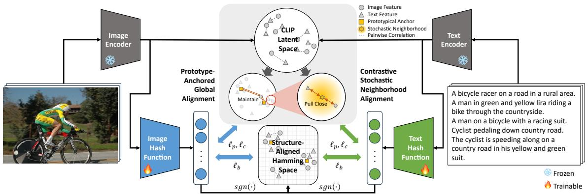
Unsupervised Data-Efficient Cross-Modal Retrieval with Global-Neighborhood Alignment Hashing
中相关；详见方法、贡献和实验边界。
方法：少量 image-text pair 下，把 VLM 连续 latent 结构转成二值 Hamming 空间，适合看数据效率与跨模态对齐
Cross-Space Distillation: Teaching One-Step Students with Modern Diffusion Teachers
中相关；详见方法、贡献和实验边界。
方法：Cross-Space Distillation 解决 teacher/student latent space 不同的问题，可借鉴到异构视觉基础模型蒸馏
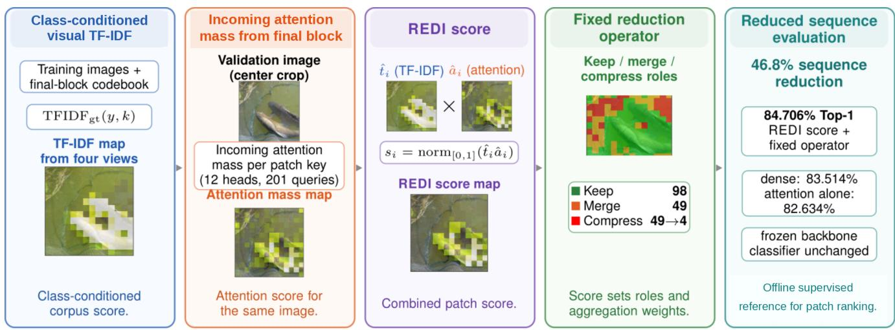
REDI: Corpus Aware Patch Ranking for DINOv3 Token Reduction
中相关；详见方法、贡献和实验边界。
方法：REDI 用 corpus-aware visual vocabulary + attention 给 DINOv3 patch ranking，适合扫 token ranking 机制